Este proyecto está protegido
Introduce la contraseña para acceder.
Notification System
Diseño de un sistema de notificaciones push para escritorio y email que avisa a los usuarios de las acciones relevantes que ocurren en la plataforma.
Rol
Product Designer
Tipo de usuario
Transportistas (Freightos)
Año
2023
Equipo
PM, Ingeniería, Research


Por qué necesitábamos un nuevo enfoque
Contexto
En la plataforma ocurrían constantemente acciones relevantes para los usuarios — cambios de estado, mensajes, alertas — pero no existía ningún sistema centralizado para avisarles. La única vía era que el propio usuario entrara y comprobara manualmente si algo había cambiado.
Falta de visibilidad
Los usuarios debían refrescar manualmente la plataforma para enterarse de cambios importantes.
Canales desconectados
El email era la única vía de aviso, y no siempre reflejaba lo que ocurría dentro de la plataforma.
Riesgo de sobrecarga
Sin un sistema de prioridades, cualquier notificación futura corría el riesgo de saturar al usuario.
Cómo investigamos antes de diseñar las notificaciones
Entrevistas con usuarios y soporte
Nuestros usuarios pedían encarecidamente que, de alguna manera, se pudiera identificar cada uno de los cambios que ocurrían durante su experiencia de usuario en la plataforma.
Análisis de tickets de soporte
Llegaban muchísimos tickets de error reportados por usuarios, porque no podían estar al tanto del proceso de sus bookings o de sus cotizaciones con otros clientes y stakeholders.
Benchmark de sistemas de notificaciones
Intentamos localizar e investigar aquellos sistemas más actualizados a nivel de experiencia de usuario e interfaz, para garantizar una funcionalidad lo más fresca posible.
Requisitos básicos desde product management
Desde product management nos plantearon un requisito clave: permitir que forwarders y shippers pudieran configurar notificaciones para cada envío y decidir quién recibía cada tipo de información. Se plantearon dos opciones: mostrar los tipos de notificación y asignar personas a cada uno, o añadir personas y elegir qué tipo de información recibiría cada una.
Benchmark
Se realizaron diferentes estudios sobre otras propuestas vistas en otros softwares. Predominaban side panels accesibles desde casi cualquier parte de la plataforma, permitiendo a los usuarios seleccionar qué notificaciones se recibirían tanto de un pedido como de todos en general.
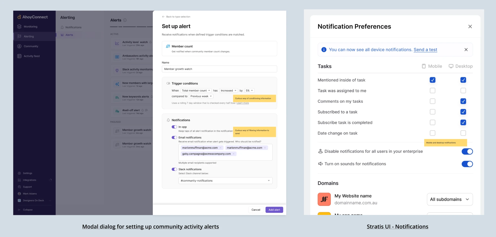
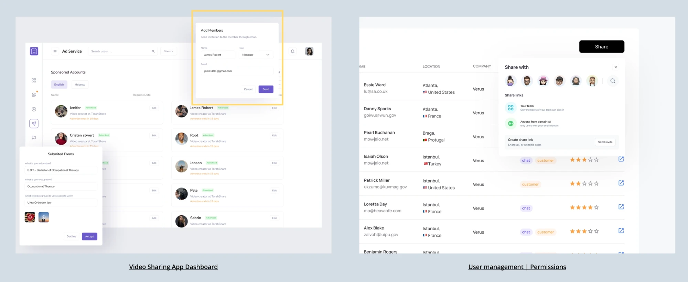
Referencias de benchmark de otros sistemas de notificaciones del mercado.
De los primeros bocetos a las primeras interacciones
Enfoque
Desde la dirección de producto se promovía buscar soluciones para varios escenarios. Teníamos ventaja porque ya en su momento había planteado una propuesta rápida para los senior product managers, donde daba una idea sobre cómo podríamos apañar esta nueva funcionalidad en un futuro.
Pre-booking
Añadir el mismo componente de notificaciones en el lado de pre-booking, antes de confirmar el envío.
Creación de contacto
Permitir añadir notificaciones directamente al crear o seleccionar un contacto.
Vista general de envíos
Añadir notificaciones desde la vista general de envíos, sin tener que entrar en cada uno.
Ficha de contacto
Añadir notificaciones haciendo clic directamente sobre cada contacto.
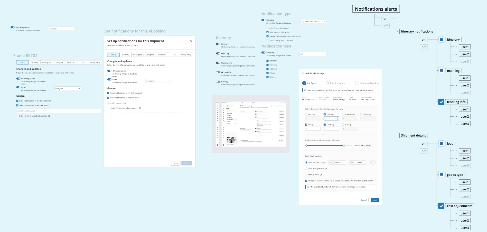
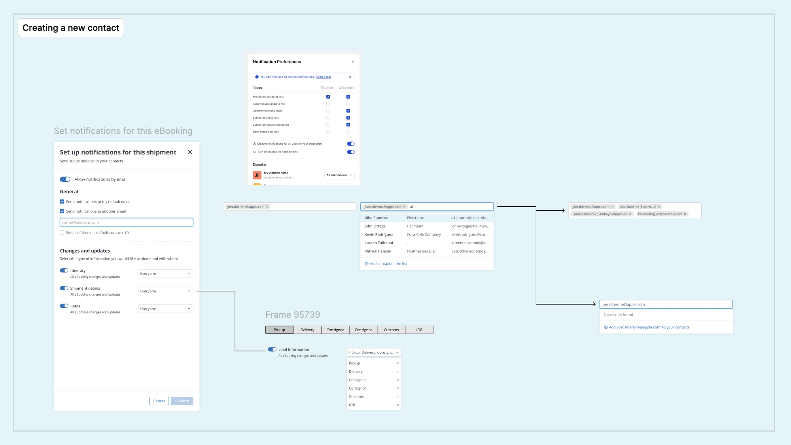
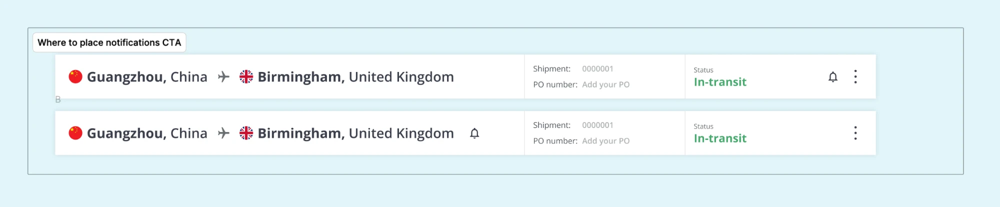
Primeros bocetos del sistema de notificaciones y escenarios planteados por producto.
Pre-booking
Por cuestiones de roadmap, esta sección quedó exenta de rediseño y se mantuvo como estaba hasta el momento.
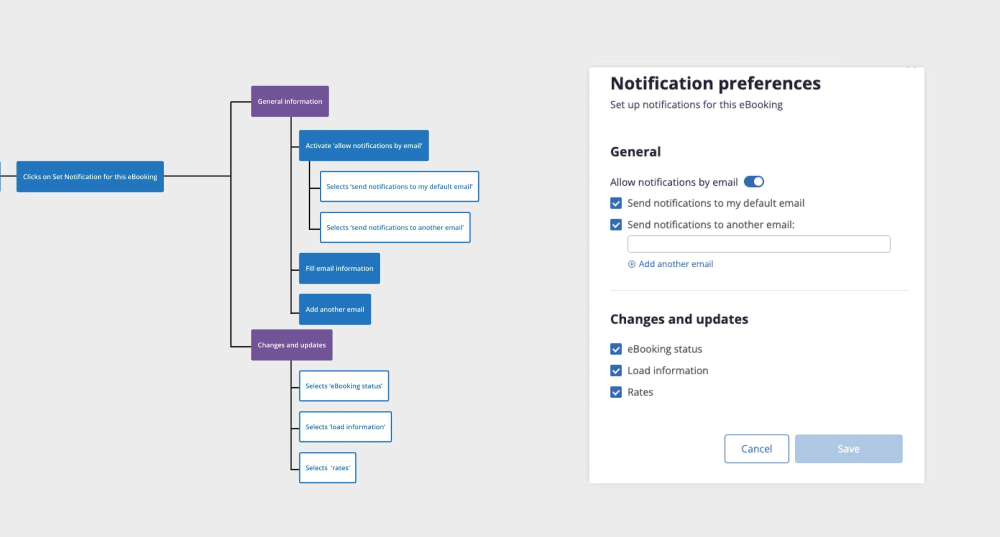
Flow actual de las páginas de pre-booking. No tengo capturas de pantalla completas jeje :)
Creación de contacto
En cuanto a la creación de contacto, también se mantuvo fuera del proyecto final de momento: la propuesta está hecha, pero no se pudo integrar debido a cuestiones técnicas del equipo de desarrollo, y porque para el equipo directivo no era realmente una prioridad finalmente.
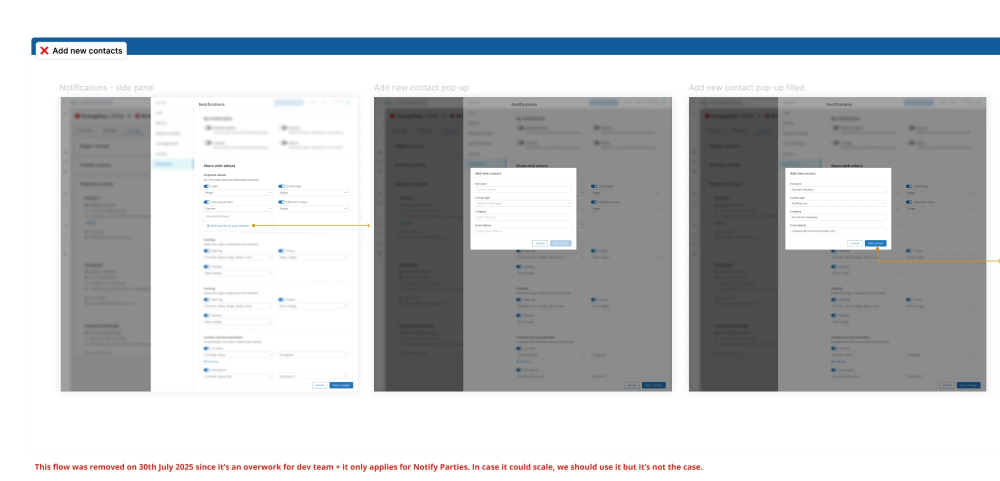
Propuesta de flow para añadir un nuevo contacto, finalmente descartada.
Cambio de rumbo
Este proyecto sufrió numerosos cambios de prioridades durante su desarrollo. Así arrancamos, y así terminamos.
Pre-booking
Añadir el mismo componente de notificaciones en el lado de pre-booking, antes de confirmar el envío.
Creación de contacto
Permitir añadir notificaciones directamente al crear o seleccionar un contacto.
Vista general de envíos
Añadir notificaciones desde la vista general de envíos, sin tener que entrar en cada uno.
Ficha de contacto
Añadir notificaciones haciendo clic directamente sobre cada contacto.
Activar/Desactivar notificaciones
Los usuarios podían activar o desactivar las notificaciones directamente desde la vista general de envíos.
Añadir y modificar tarjetas de contacto del propio envío
Se permitía añadir y modificar las tarjetas de contacto asociadas a cada envío, sin salir del flujo principal.
Un sistema de notificaciones más sencillo de lo esperado
Enfoque
Tras percibir estos cambios de roadmap mientras el proyecto estaba en pleno desarrollo de diseño, me alineé bastante rápido con los diferentes stakeholders y conseguimos sacar en tiempo récord un sistema de notificaciones que pudiera solventar las principales prioridades del equipo de producto.
Funcionalidades
entregadas
-
01
Activar y desactivar notificaciones de manera general
Se buscaba una solución que permitiera modificar rápidamente si un envío debería de recibir notificaciones o no.
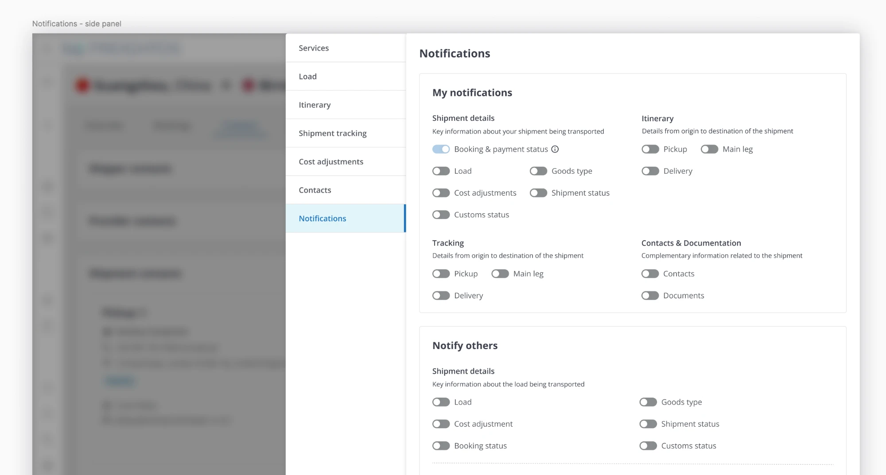
Panel lateral de notificaciones, con el toggle general de My notifications.
-
02
Notificar a terceras personas
Conseguimos proporcionar una solución donde se permitiera la customización de las notificaciones que recibirían cada uno de los contactos del envío.
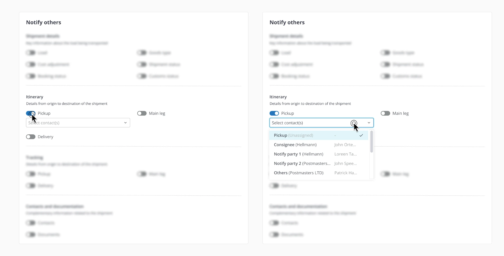
Selección de contactos por evento dentro del bloque Notify others.
-
03
Añadir y modificar contactos del envío
Dentro de la industria logística hay muchas personas involucradas dentro del proceso de envío. Por ello, era interesante poder seleccionar contactos y modificar sus datos, en caso de que fuese necesario.
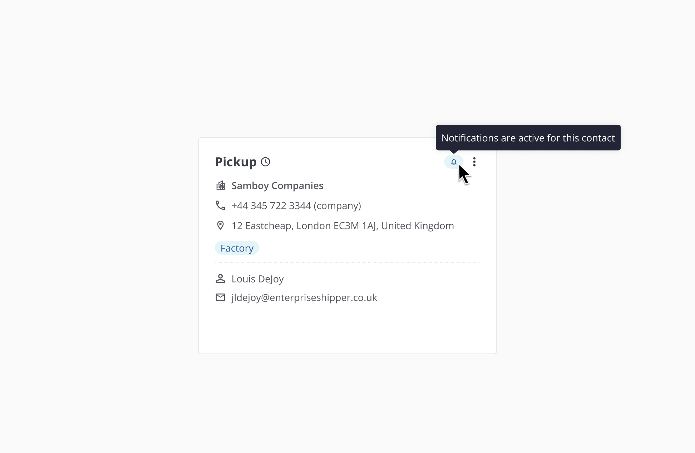
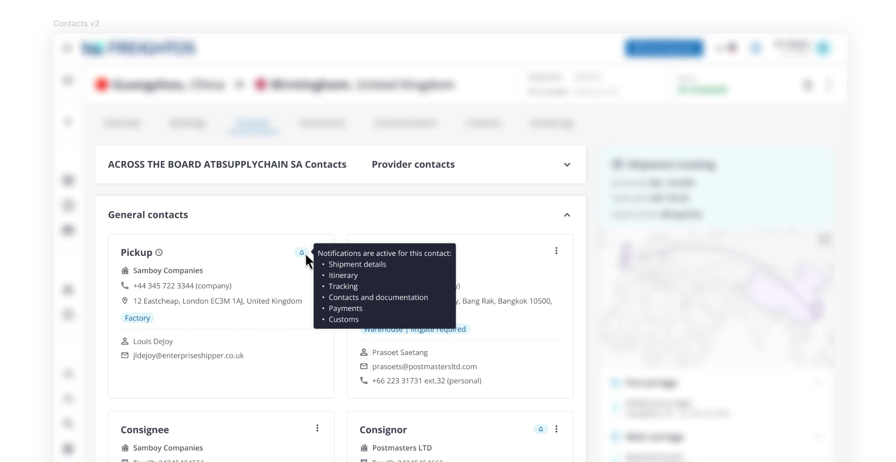
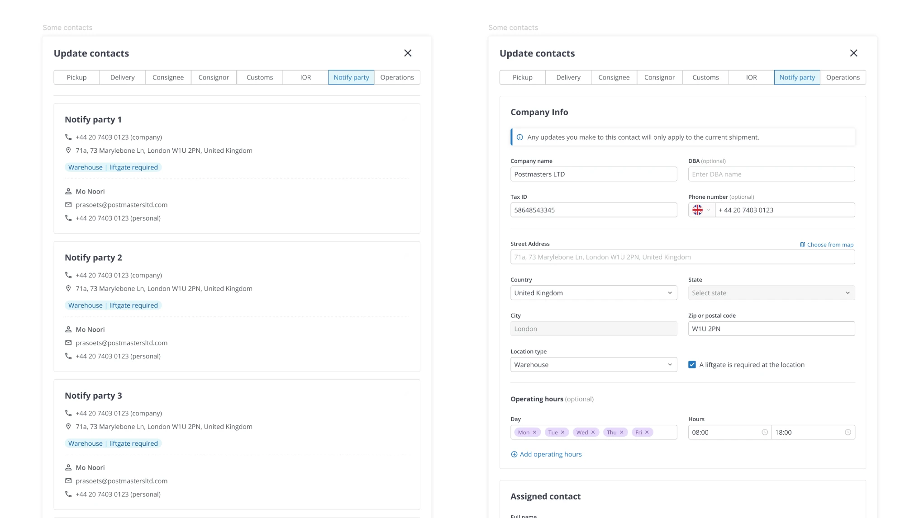
Detalle de campana, tarjeta de contacto en Contacts v2, y modal de edición de Notify party.
Qué me dejó este proyecto
A veces hay proyectos que conllevan más o menos prioridad dentro de un roadmap. Con este en concreto, pude observar cómo los requisitos pueden cambiar de la noche a la mañana y la agilidad que hay que tener para adaptarse a las nuevas visiones externas. Me llevo mucho entrenamiento para futuros proyectos que conlleven situaciones similares.
También comentar que este proyecto no ha sido publicado aún en el sistema, por eso todo lo que vemos en esta página es estrictamente confidencial.
Has llegado al final
¿Quieres ver más proyectos?